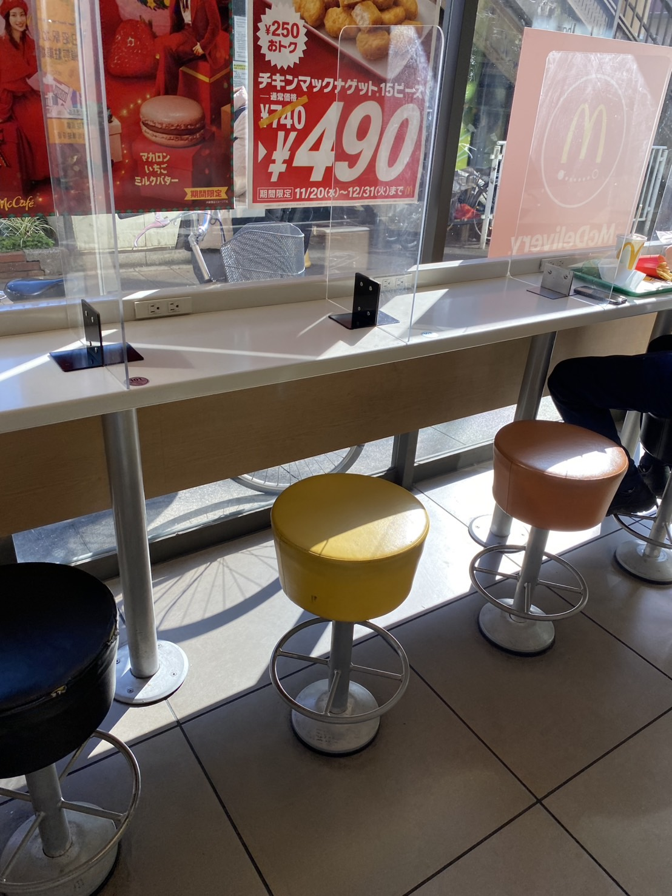
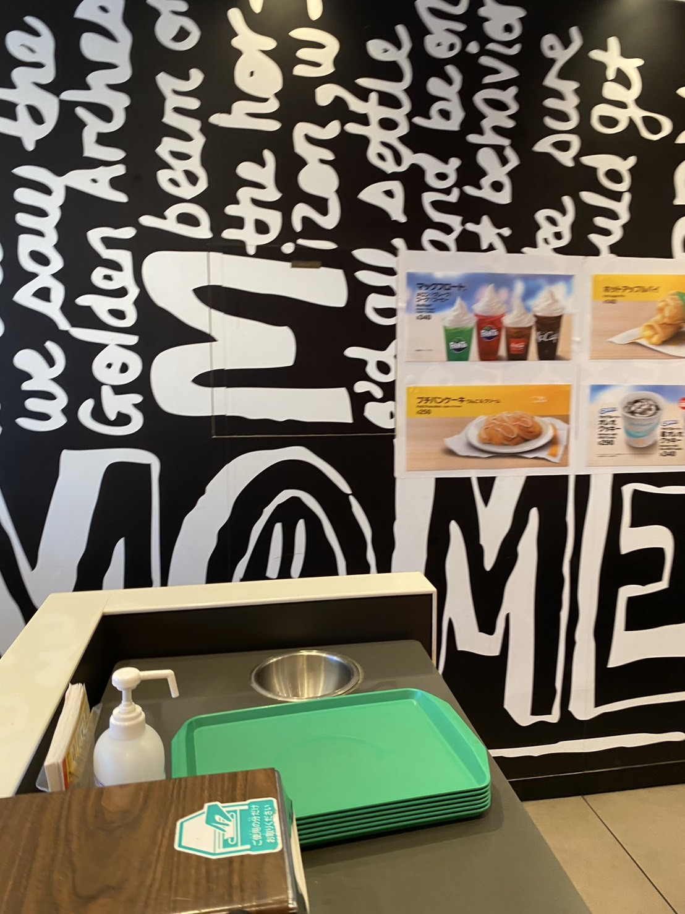
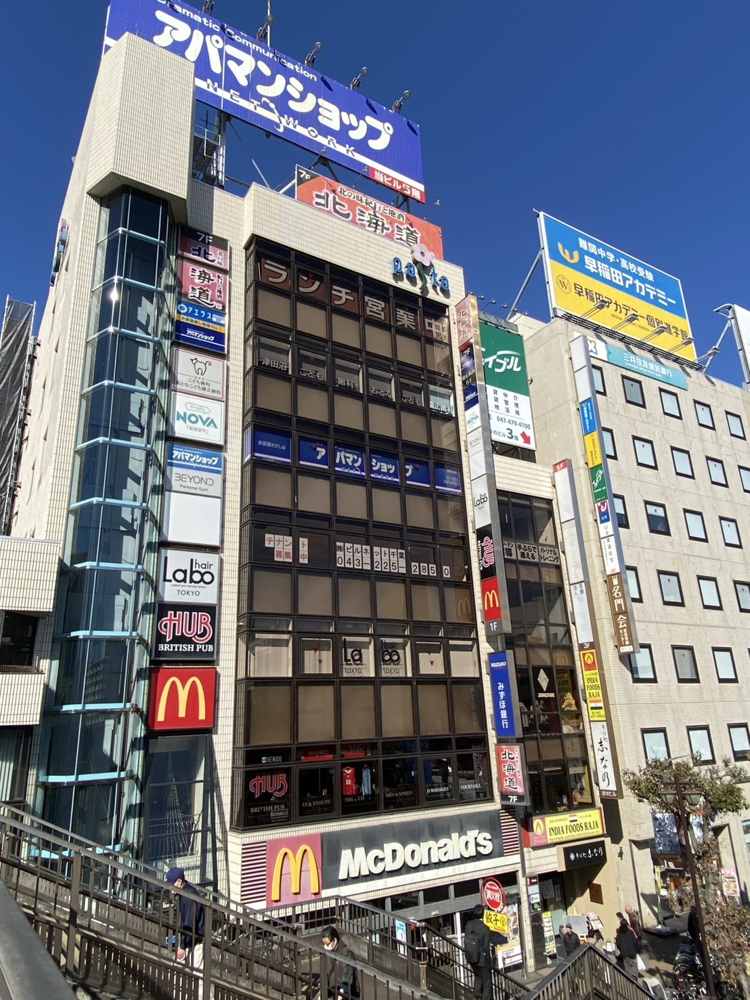

実験・演習用に作成

| おすすめ | ビッグマックセット＠バリューセット 750円 |
|---|---|
| 営業時間 | 6:00～24:00 テイクアウトは25:00閉店 |
| 定休日 | なし |
| 所在地 | 〒274-0825 千葉県船橋市前原西２丁目１４−８ 津田沼パスタビル |
| JR津田沼駅から | 徒歩 1分 |
| キャンパスから | 徒歩 4分 |
| 最短滞在時間（目安） | 20分～40分 |
| 施設規模 | 50席 |
| 推奨人数 | 1~4人 |
詳細はホームページをご覧ください。
Tel：047-475-1330
津田沼駅から徒歩一分で到着！
単品からセットまで幅広いラインナップ！
いつもお客さんで賑わっているので、一人でも複数人でも訪れやすい！
接客がスピーディーで、注文してからすぐに商品が提供されるので、講義の合間のランチに最適！
店外で食べたい場合は持ち帰りも可能！
店内の様子です！

▲窓際の席

▲店内の様子

▲外観
トップページ